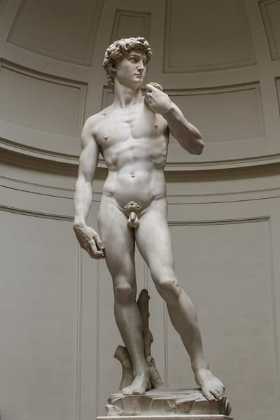
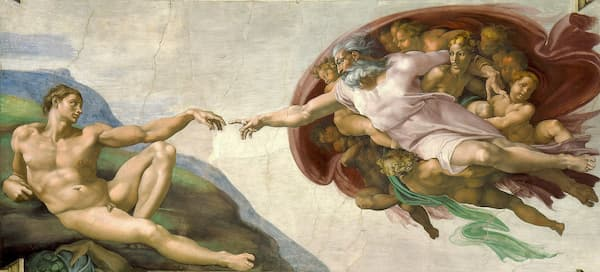
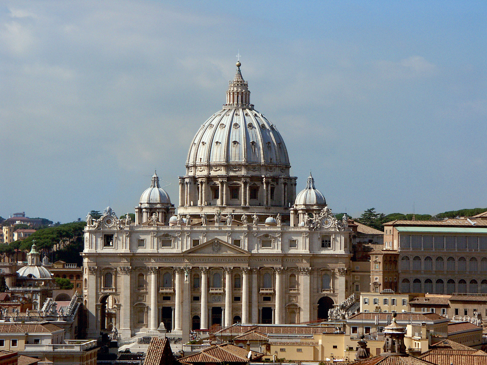
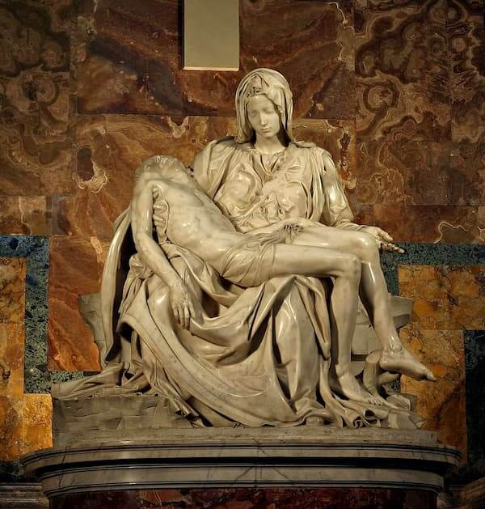
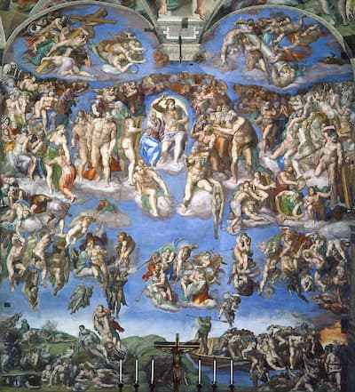

MIGUEL ÁNGEL
Michelangelo di Lodovico Buonarroti Simoni (6 de marzo de 1475 – 18 de febrero de 1564), conocido simplemente como Miguel Ángel, fue un escultor, pintor, arquitecto y poeta italiano del Alto Renacimiento nacido en la República de Florencia, que ejerció una influencia incomparable en el desarrollo de Arte occidental. Su versatilidad artística fue de un orden tan alto que a menudo se lo considera un contendiente por el título de hombre arquetípico del Renacimiento, junto con su rival y mayor contemporáneo, Leonardo da Vinci. Varios estudiosos han descrito a Miguel Ángel como el mejor artista de su época e incluso como el mejor artista de todos los tiempos.
Durante su vida, Miguel Ángel fue llamado a menudo Il Divino (“el divino”). Sus contemporáneos a menudo admiraban su terribilità, su capacidad para infundir asombro en los espectadores de su arte. Los intentos de artistas posteriores de imitar el estilo apasionado y altamente personal de Miguel Ángel dieron como resultado el manierismo, el siguiente gran movimiento en el arte occidental después del Alto Renacimiento.
A continuación, se muestran las 10 obras más famosas de Miguel ángel:
David es una obra maestra de la escultura renacentista, realizada en mármol entre 1501 y 1504 por el artista italiano Miguel Ángel. David es una estatua de mármol de 5,17 metros (17 pies 0 pulgadas) de la figura bíblica de David, un tema favorito en el arte de Florencia.

La creación de Adán (italiano: Creazione di Adamo) es una pintura al fresco del artista italiano Miguel Ángel, que forma parte del techo de la Capilla Sixtina, pintado c. 1508-1512. Ilustra la narrativa bíblica de la creación del libro del Génesis en la que Dios da vida a Adán, el primer hombre. El fresco es parte de un esquema iconográfico complejo y cronológicamente es el cuarto de la serie de paneles que representan episodios del Génesis.

En 1546, a los 71 años, Miguel Ángel recibió el mayor y último encargo de su vida. El Papa Pablo III lo nombró arquitecto en jefe de la extensa Basílica de San Pedro, la opulenta pieza central del Vaticano donde descansan los papas y hogar de la cúpula más alta del mundo. Inicialmente diseñado por Donato Bromante, el edificio, durante los primeros 40 años de construcción, sufrió el tira y afloja de cinco sucesores posteriores con visiones diferentes antes de la llegada de Miguel Ángel.
Incrementó sustancialmente la escala de los cuatro pilares principales en el cruce que sostiene la cúpula y realzó el grosor del perímetro de la iglesia.

En 1497, un cardenal llamado Jean de Billheres encargó a Miguel Ángel que creara una obra de escultura para entrar en una capilla lateral en la Basílica de San Pedro en Roma. El trabajo resultante, la Piedad, tendría tanto éxito que ayudó a lanzar la carrera de Miguel Ángel a diferencia de cualquier trabajo anterior que hubiera hecho. Miguel Ángel afirmó que el bloque de mármol de Carrara que solía trabajar en este era el bloque más “perfecto” que jamás había usado, y continuaría puliendo y refinando este trabajo más que cualquier otra estatua que creara.
La escena de la Piedad muestra a la Virgen María sosteniendo el cuerpo muerto de Cristo después de su crucifixión, muerte y remoción de la cruz, pero antes de que fuera colocado en la tumba. Este es uno de los eventos clave de la vida de la Virgen, conocido como los Siete Dolores de María, que fueron el tema de las oraciones devocionales católicas.

El Juicio Final (en italiano: Il Giudizio Universale) es un fresco del pintor renacentista italiano Miguel Ángel que cubre todo el muro del altar de la Capilla Sixtina en la Ciudad del Vaticano. Es una representación de la Segunda Venida de Cristo y el juicio final y eterno de Dios sobre toda la humanidad. Los muertos se levantan y descienden a su destino, según lo juzga Cristo, quien está rodeado de santos prominentes. En total hay más de 300 figuras, con casi todos los hombres y ángeles mostrados originalmente como desnudos; muchos fueron luego cubiertos en parte por cortinas pintadas, de las cuales algunas permanecen después de una reciente limpieza y restauración.
El trabajo tardó más de cuatro años en completarse entre 1536 y 1541.
